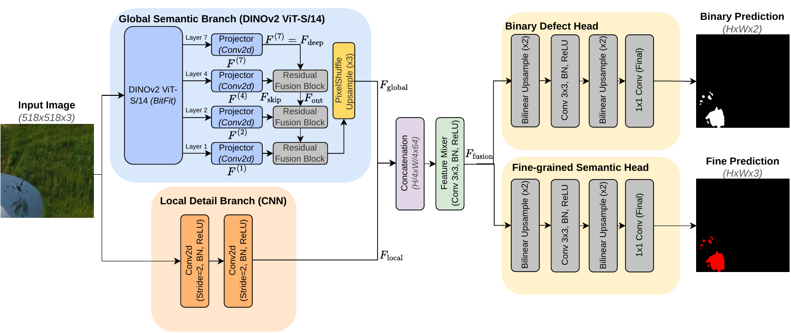

Boxes are cheap
Industrial inspection pipelines often already contain bounding boxes, while pixel masks are costly and require domain expertise.
Learning Defect Segmentation from Noisy SAM Masks
AIMS Group, Department of Electrical Engineering, Eindhoven University of Technology
Accurate defect segmentation is critical for industrial inspection, yet dense pixel-level annotations are rarely available. Boxes2Pixels addresses this gap by converting inexpensive bounding boxes into SAM pseudo-masks and training a compact student model that treats SAM as a noisy teacher rather than ground truth. The student combines a hierarchical decoder over frozen DINOv2 features, an auxiliary binary localization head, and one-sided online self-correction to recover sparse defects missed by pseudo-labels. On a manually annotated wind turbine inspection benchmark, Boxes2Pixels improves anomaly mIoU by +6.97 and binary IoU by +9.71 over the strongest baseline trained under identical weak supervision.
Industrial inspection pipelines often already contain bounding boxes, while pixel masks are costly and require domain expertise.
Box-prompted SAM masks can over-segment shadows and surface texture, while missing thin cracks or low-contrast defects.
Boxes2Pixels uses pseudo-masks for supervision, but relaxes background labels when the student is confidently detecting a defect.
Boxes2Pixels first converts bounding-box annotations into SAM pseudo-masks, then trains a compact hierarchical student to perform dense defect segmentation without requiring SAM at inference time.

Method overview. A frozen DINOv2 ViT-S/14 semantic branch is fused with a lightweight local detail branch. The fused representation feeds a binary defect head and a fine-grained semantic head, trained with objectives designed for noisy pseudo-label supervision.
Legacy YOLO-format box annotations provide coarse defect localization.
Boxes are used as SAM prompts to generate dense, but imperfect, pixel labels offline.
A compact student combines stable global semantics with local detail features.
At inference, SAM is no longer used; the student directly predicts defect masks.
The student uses frozen DINOv2 ViT-S/14 as a global semantic branch and adapts only bias and normalization parameters through BitFit. Intermediate DINOv2 features from layers {1, 2, 4, 7} are fused top-down, then combined with a lightweight CNN detail branch at quarter resolution.
Two heads operate on the fused representation: a binary defect head for foreground localization and a fine-grained semantic head for background, dirt, and damage.
Anomaly mIoU
Anomaly F1
Binary IoU
FPS on H100
| Model | mIoU | Anomaly mIoU | Anomaly F1 | Binary IoU |
|---|---|---|---|---|
| U-Net | 0.7057 | 0.5629 | 0.7036 | 0.5427 |
| DeepLabV3-B2 | 0.6867 | 0.5342 | 0.6955 | 0.5331 |
| SegFormer-B2 | 0.7231 | 0.5881 | 0.6939 | 0.5312 |
| Boxes2Pixels | 0.7661 | 0.6523 | 0.7674 | 0.6226 |
Test-set evaluation against manually annotated pixel-level masks. All models are trained under identical box-only supervision using SAM pseudo-masks.
One-sided online self-correction targets a common industrial failure mode: sparse defects are often marked as background because they are missed by the teacher or absent from the original box annotations. Boxes2Pixels only corrects background labels when the student predicts a defect class with high confidence.
| Method | Binary Recall | Binary IoU |
|---|---|---|
| w/o correction | 0.6195 | 0.5255 |
| w/ correction | 0.8051 | 0.6226 |
| Gain | +0.1856 | +0.0971 |
| Model | Total Params | Trainable Params | FLOPs | Latency | FPS |
|---|---|---|---|---|---|
| DeepLabV3-B2 | 20.5M | 20.5M | 18.92G | 7.99 ms | 125.1 |
| SegFormer-B2 | 27.3M | 27.3M | 58.97G | 13.33 ms | 75.0 |
| Boxes2Pixels | 27.6M | 5.6M | 43.37G | 6.20 ms | 161.4 |
BitFit-style adaptation reduces the number of trainable parameters by 80% while maintaining real-time inference throughput.
The dataset is currently provided as a Google Drive zip. Training and validation masks are SAM-generated pseudo-masks, while the refined test masks are used only for evaluation.
dataset_dtu_final_split/
├── train/
│ ├── images/
│ └── masks/
├── val/
│ ├── images/
│ └── masks/
└── test/
├── images/
├── masks_refined/
└── yolo_labels/
@article{lendering2026boxes2pixels,
title = {Boxes2Pixels: Learning Defect Segmentation from Noisy SAM Masks},
author = {Lendering, Camile and Akdag, Erkut and Bondarev, Egor},
journal = {arXiv preprint arXiv:2604.11162},
year = {2026}
}